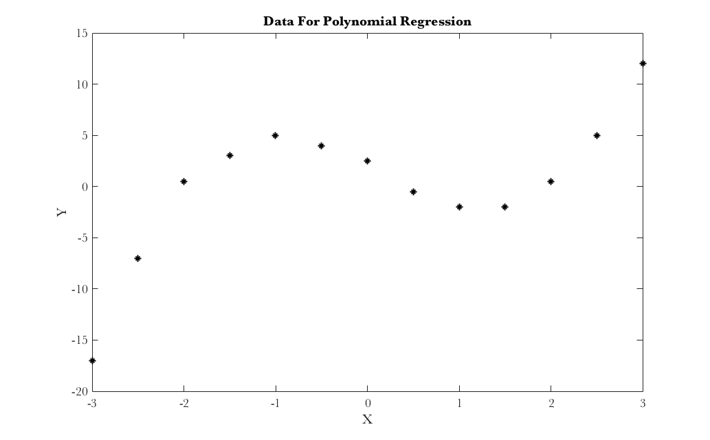
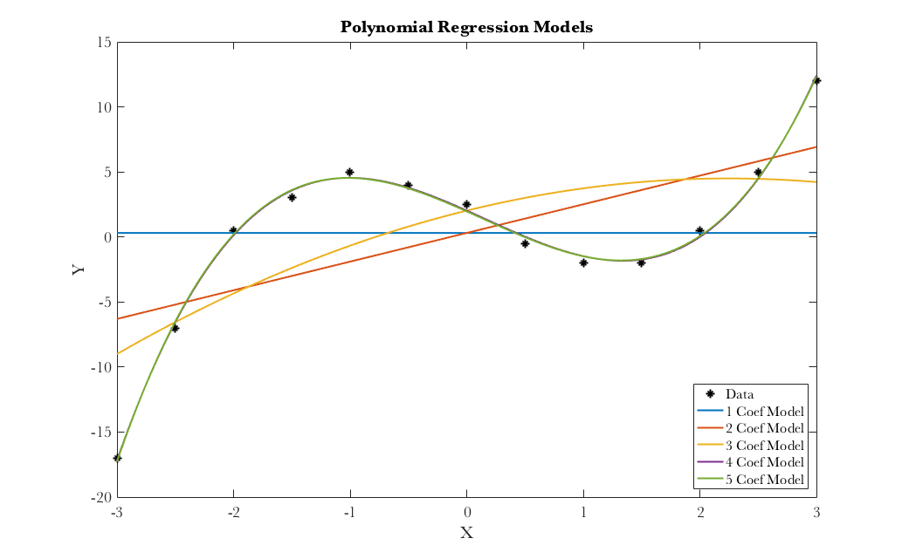
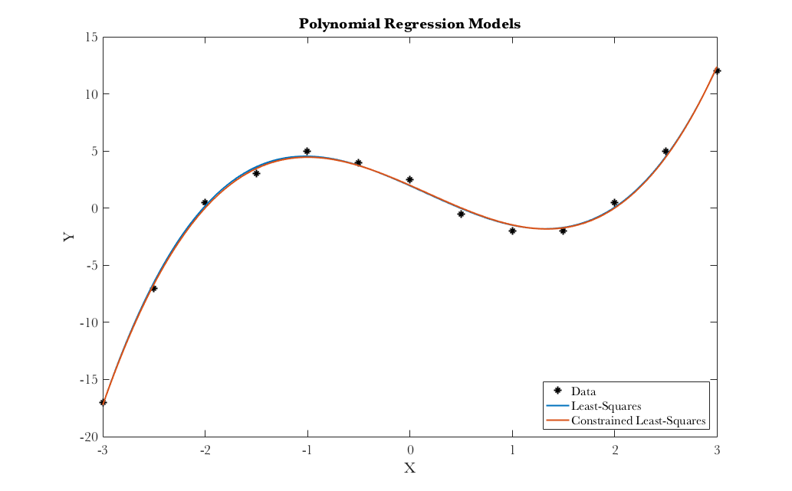

Contents
Project 2, Question 2
code to use sweep operator to perform linear regression
2-a , load data, create Vandermonde design matrix, build tableau
x = [-3,-2.5,-2,-1.5,-1,-0.5,0,0.5,1,1.5,2,2.5,3]';
y = [-17,-7,0.5,3,5,4,2.5,-0.5,-2,-2,0.5,5,12]';
figure;plot(x,y,'k*');xlabel('X');ylabel('Y');title('Data For Polynomial Regression');
X = vandermonde(x,4);
[n,p] = size(X);
T = [[X'*X,X'*y];[y'*X,y'*y]];

2-b , test SWEEP operator, the function SWEEP is attached separately
for k=1:p
T = SWEEP(T,k);
end
fprintf('The last column of T after sweeping all rows\n');
fprintf('is the solution to the least-squares problem\n');
myB = T(1:p,end)
originalSSR = T(end,end);
matlabB = X\y;
fprintf('This is MATLAB''s least-squares solution: \n');
matlabB
The last column of T after sweeping all rows
is the solution to the least-squares problem
myB =
1.9677
-4.0030
-0.4349
0.9930
-0.0063
This is MATLAB's least-squares solution:
matlabB =
1.9677
-4.0030
-0.4349
0.9930
-0.0063
2-c , iteratively run regression, make plots
T = [[X'*X,X'*y];[y'*X,y'*y]];
figure;
plot(x,y,'k*');xlabel('X');ylabel('Y');
title('Polynomial Regression Models');
h = legend('Data','Location','Southeast');
hold on;
a = linspace(-3,3,1000);
newleg = h.String;
fprintf('Iterative Regression: \n');
fprintf(' Coefs SSR\n');
for k=1:p
T = SWEEP(T,k);
hornerFun = myHorner(T(1:k,p+1));
plot(a,hornerFun(a));
newleg{end+1} = sprintf('%d Coef Model',k);
legend(newleg);
disp([k,T(p+1,p+1)]);
end
Iterative Regression:
Coefs SSR
1.0000 570.7692
2.0000 349.8887
3.0000 319.7837
4.0000 2.5180
5.0000 2.4869

2-d , solve constrained least-squares problem
L = [1,-2,4,-8,16;1,2,4,8,16];
Lrows = size(L,1);
T = [[X'*X,L',X'*y];[L,zeros(2,Lrows+1)];[y'*X,zeros(1,Lrows),y'*y]];
for ii=1:p+Lrows
T = SWEEP(T,ii);
end
constrainedB = T(1:p,end);
fprintf('Coefficients Beta: \n');
fprintf(' LS Constrained LS \n');
disp([myB,constrainedB]);
constrainedSSR = T(end,end);
fprintf('Sum of Squared Residuals: \n');
fprintf(' LS Constrained LS \n');
disp([originalSSR,constrainedSSR]);
originalVarExp = 1-var(y-X*myB)/var(y);
constrainedVarExp = 1-var(y-X*constrainedB)/var(y);
fprintf('Proportion of Variance Explained: \n');
fprintf(' LS Constrained LS \n');
disp([originalVarExp,constrainedVarExp]);
fprintf('Check constraint on regression L*beta: \n');
disp(L*constrainedB);
figure;
plot(x,y,'k*');xlabel('X');ylabel('Y');
title('Polynomial Regression Models');
h = legend('Data','Location','Southeast');
hold on;
a = linspace(-3,3,1000);
newleg = h.String;
hornerFun = myHorner(myB);
plot(a,hornerFun(a));
newleg{end+1} = 'Least-Squares';
legend(newleg);
hornerFun = myHorner(constrainedB);
plot(a,hornerFun(a));
newleg{end+1} = 'Constrained Least-Squares';
legend(newleg);
Coefficients Beta:
LS Constrained LS
1.9677 2.0007
-4.0030 -3.9491
-0.4349 -0.5062
0.9930 0.9873
-0.0063 0.0015
Sum of Squared Residuals:
LS Constrained LS
2.4869 2.5880
Proportion of Variance Explained:
LS Constrained LS
0.9956 0.9955
Check constraint on regression L*beta:
1.0e-15 *
-0.2949
-0.2949
